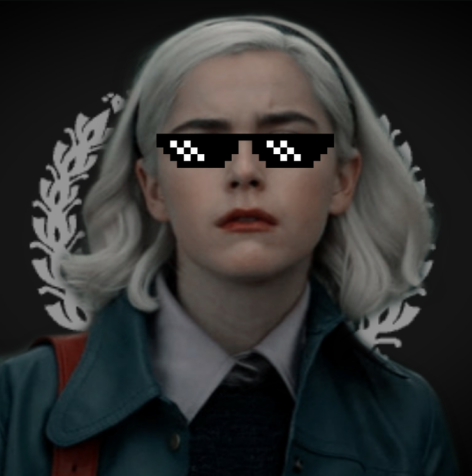

Sobre
A Repúbica Federativa do Tompsom, é um servidor no discord de rp socio-econômico político. E aqui has, um hall para mostrar ao povo as pessoas que já chefiaram tamanho cabaret
-
Tecladin
- Como: General Secretário Pingu e Conselheiro de Estado
- 1° Mandato: 15/10/2019 - ??/??/????
- 2° Mandato: ??/??/???? - ??/??/????
- 3° Mandato: algum dia de abril de 2020 - algum dia de maio de 2020
-
União Sinistra Stalker e Marechesto
- Como: cargos desconhecidos
- Mandato: Entre o primeiro e o segundo do Tecladin
- Feitos: desconhecidos
-
Gamezprei
- Mandato: 1 hora em fevereiro de 2020
- Feitos: quebrou o server
- por conta dos saques nos museus e repartições público, sua photo foi perdida eternamente

-
Bom Jovem
- Mandato: assumiu logo depois do Gamezprei e passou uns dias antes de ser substituído pelo Tecladin, no segundo mandato compartilhou o cargo com o Dr. Gilmar Mendes por um tempo
- Feitos: Porra nenhuma durante o tempo no cargo. Hoje é moderador
-
Getulhão Da Massa
- Mandato: 01/06/2020
- Feitos: Me baniu "de zueira" e a mando do teclado perdeu o cargo por isso
-
Deputs
- Mandato: 01/06/2020 - atualidade
- Feitos: abriu a Telepingu, deu uma medalha pro Poeteiro Tecladin por seus trabalhos para a cultura